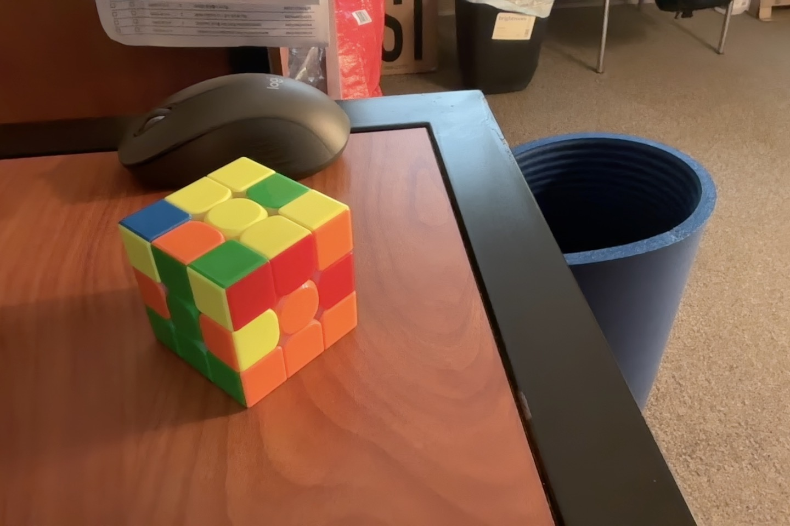

In this step of the cube, the ultimate goal is to form the first layer
of the cube. If you think of a 3x3 cube as composed of three layers (the
lower, middle, and upper layer), then in this step you are going to
solve the lower layer of the cube.

Put the 4 corner pieces in place
The algorithms found in video
Case 1 where white faces towards you: 5x twist move
Case 2 where white faces towards up: 3x twist move
Case 3 where white faces towards the right: 1x twist move